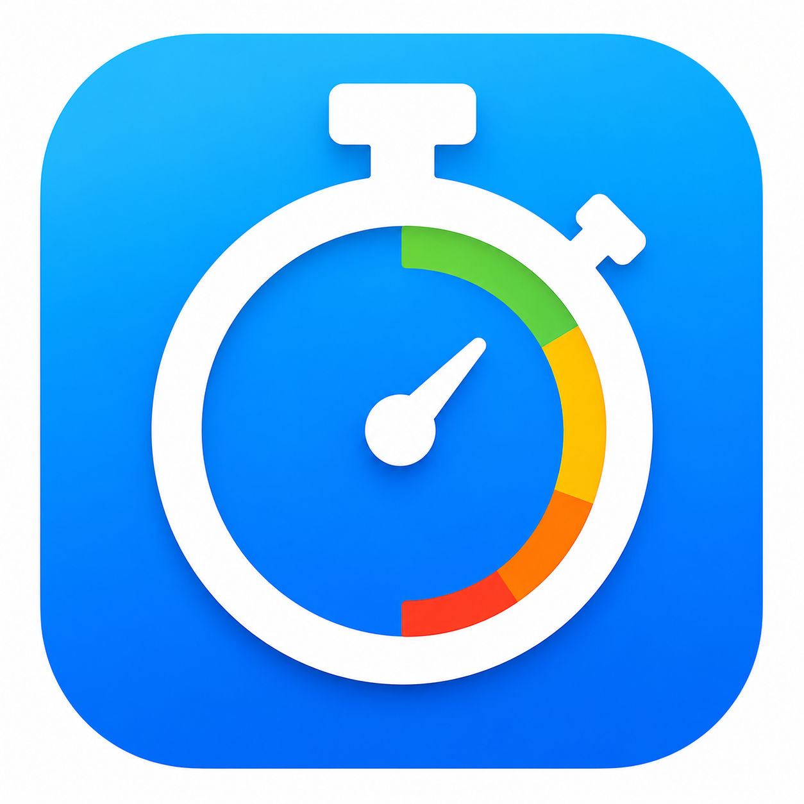

工程タイマーWork Timer
プライバシー
ポリシーPrivacy Policy
制定日：2026年7月4日Effective date: July 4, 2026
改定日：2026年8月30日Revision date: August 30, 2026
1. 適用範囲1. Scope
本プライバシーポリシーは、StudioYが提供するアプリ「工程タイマー」（以下「本アプリ」といいます。）に適用されます。本アプリは、工程付きタイマー、マルチタイマー、作業ログ、CSV出力などを提供する作業支援アプリです。This Privacy Policy applies to the app "Work Timer" provided by StudioY (the "App"). The App is a work-support app that provides step timers, multi-timers, work logs, CSV export, and related features.
2. 取得・利用する情報2. Information We Handle
本アプリでは、機能提供、広告配信、およびユーザーが明示的に許可した場合の利用状況分析のため、以下の情報を扱う場合があります。The App may handle the following information to provide its features, deliver advertising, and analyze usage when the user has explicitly opted in.
- ユーザーが作成したタイマー名、工程名、工程時間、工程カラー、アイコン、メモ等の設定内容Timer names, step names, step durations, step colors, icons, notes, and other settings created by users
- マルチタイマーのセッション名、使用するタイマー、実行状態、一時停止や停止の状態Multi-timer session names, selected timers, running status, pause status, and stop status
- 作業ログに含まれる実行日時、作業時間、完了または中断の状態、工程ごとの実行結果Work log data such as run date and time, work duration, completion or interruption status, and results for each step
- 言語、画面点灯、終了音、バイブレーション、通知、音声操作、音声フィードバック、利用状況データ送信等のアプリ設定App settings such as language, screen-on behavior, completion sound, vibration, notifications, voice control, voice feedback, and usage analytics preferences
- Premium機能の購入状態、復元状態、ストアから提供される商品情報、価格表示、購入結果Premium purchase status, restore status, product information provided by stores, price display, and purchase results
- 広告表示の有無、広告枠の表示状態、および広告配信のために処理される広告識別子（IDFA）やデバイス・広告の表示操作に関する情報Ad display status and information processed for ad delivery, including the advertising identifier (IDFA) and information about the device and ad display or interaction
- 「利用状況データを送信」を有効にした場合の、画面表示、タイマーの開始・完了・中断、ルーティン作成、マルチタイマー利用、音声コマンド利用、CSV出力、Premium案内・購入導線などの利用イベントWhen "Send Usage Data" is enabled, usage events such as screen views, timer starts, completions and cancellations, routine creation, multi-timer use, voice-command use, CSV export, and Premium offer or purchase flows
- 利用状況分析に必要なアプリインスタンス識別情報、アプリ・端末に関する技術情報、Premium区分、および工程数・時間・進行率等を定義済みの範囲に丸めた値App-instance identifiers, technical app and device information, Premium tier, and bucketed values for items such as step counts, durations, and progress used for analytics
- 音声操作を有効にした場合のマイク許可状態、音声認識結果に基づく操作内容Microphone permission status and operations based on speech recognition results when voice control is enabled
- お問い合わせ時にユーザーが任意で提供する連絡先、問い合わせ内容Contact information and inquiry details voluntarily provided when contacting us
Firebase Analyticsへ、タイマー名、工程名、セッション名、メモ、音声認識結果の文字列、録音内容、内部ID、CSVファイル名・保存先、生の例外・エラーメッセージ・スタックトレース、メールアドレスその他の個人情報、独自User IDまたは独自の永続的端末IDを送信しない設計としています。The App is designed not to send timer names, step names, session names, notes, recognized speech text, recordings, internal IDs, CSV file names or destinations, raw exceptions, error messages or stack traces, email addresses or other personal information, custom User IDs, or custom persistent device IDs to Firebase Analytics.
3. データの保存場所3. Data Storage
ユーザーが作成したタイマー、工程、マルチタイマー、作業ログ、設定内容は、原則としてユーザーの端末内に保存されます。現時点で、本アプリはアカウント機能やクラウド同期を提供していません。Timers, steps, multi-timers, work logs, and settings created by users are generally stored on the user's device. The App currently does not provide account features or cloud synchronization.
ユーザーが「利用状況データを送信」を有効にした場合、利用状況分析のための情報はFirebase Analyticsを通じてGoogleへ送信されます。GA4のイベント・ユーザーデータ保持期間は2か月に設定しています。When the user enables "Send Usage Data," analytics information is sent to Google through Firebase Analytics. The GA4 retention period for event and user data is configured to two months.
端末の故障、紛失、アプリの削除、OSの設定変更等により、端末内のデータが失われる場合があります。Data stored on the device may be lost due to device failure, loss, app deletion, OS setting changes, or similar events.
4. 音声操作について4. Voice Control
本アプリは、ユーザーが音声操作を有効にした場合に、タイマーの開始、一時停止、再開、停止などの操作を補助するため、マイクまたはOSの音声認識機能を利用する場合があります。When users enable voice control, the App may use the microphone or the OS speech recognition feature to support operations such as starting, pausing, resuming, and stopping timers.
音声認識の処理は、端末のOSや音声認識サービスの仕様に従って行われます。StudioYは、音声内容を広告目的に利用せず、音声認識結果の文字列や録音内容をFirebase Analyticsへ送信しません。Speech recognition processing is performed according to the specifications of the device OS or speech recognition service. StudioY does not use voice content for advertising and does not send recognized speech text or recordings to Firebase Analytics.
5. 通知・音・バイブレーションについて5. Notifications, Sounds, and Vibration
本アプリは、タイマーの終了や工程の切り替わりを知らせるため、通知、終了音、バイブレーション等を使用する場合があります。これらの利用には、OSの許可や端末設定が必要になる場合があります。The App may use notifications, completion sounds, vibration, and similar features to notify users when timers end or steps change. These features may require OS permissions or device settings.
6. アプリ内課金について6. In-App Purchases
本アプリは、Premium機能として買い切り型のアプリ内課金を提供する場合があります。購入処理、決済情報、返金手続きは、App Storeまたはその他の各ストアの仕組みにより処理されます。StudioYは、クレジットカード番号などの決済情報を取得しません。The App may offer a one-time in-app purchase for Premium features. Purchase processing, payment information, and refund procedures are handled through the App Store or other store systems. StudioY does not obtain payment information such as credit card numbers.
購入済み機能の復元や購入状態の確認のため、ストアから提供される購入情報を本アプリ内で確認する場合があります。「利用状況データを送信」が有効な場合、購入完了等に関するイベントがFirebase Analyticsで記録される場合がありますが、決済カード情報は含まれません。The App may check purchase information provided by stores to restore purchased features or confirm purchase status. When "Send Usage Data" is enabled, events related to purchase completion may be recorded by Firebase Analytics, but payment-card information is not included.
7. 広告について7. Advertising
無料版では、Google（AdMob）が提供するGoogle Mobile Ads SDKを利用し、ホームの一覧画面と作業ログ画面にバナー広告のみを表示します。タイマー実行中の画面には広告を表示せず、全画面広告、動画広告、リワード広告は使用しません。The free version uses the Google Mobile Ads SDK provided by Google (AdMob) and displays banner ads only on the home list screen and work log screen. Ads are not displayed while a timer is running, and the App does not use full-screen, video, or rewarded ads.
広告配信のため、広告識別子（IDFA）、デバイスや広告の表示・操作に関する情報が、Googleのプライバシーポリシーに従ってGoogleにより処理される場合があります。これらの情報は、広告を配信し、広告の表示や操作の状況を処理するために利用されます。For ad delivery, the advertising identifier (IDFA) and information about the device and how ads are displayed and interacted with may be processed by Google in accordance with Google's privacy policy. This information is used to deliver ads and process information about how they are displayed and interacted with.
同意管理にはGoogle User Messaging Platform（UMP）を使用し、欧州経済領域、英国等では同意フォームを表示します。また、OSのApp Tracking Transparency（ATT）の許諾ダイアログを表示し、許諾された場合にIDFAが利用される場合があります。The App uses the Google User Messaging Platform (UMP) for consent management and displays a consent form in the European Economic Area, the United Kingdom, and other applicable regions. The App also displays the OS App Tracking Transparency (ATT) permission dialog, and IDFA may be used when permission is granted.
同意内容は、OSの「設定 > プライバシーとセキュリティ > トラッキング」およびアプリ内の広告プライバシー設定から再選択できます。買い切りPremiumの購入後は広告を表示せず、広告配信サービスへのリクエストも行いません。Users can review their choices through the OS at "Settings > Privacy & Security > Tracking" and through the in-app advertising privacy settings. After the one-time Premium purchase, the App does not display ads or make requests to the advertising service.
Googleによる広告データの取り扱いについては、Googleの広告に関するポリシーをご確認ください。For information about how Google handles advertising data, please see Google's advertising policies.
8. 利用目的・利用状況分析8. Purposes of Use and Usage Analytics
- 工程付きタイマー、マルチタイマー、作業ログ、CSV出力などの機能を提供するためTo provide features such as step timers, multi-timers, work logs, and CSV export
- タイマーの終了、工程切り替え、作業状態をユーザーに知らせるためTo notify users of timer completion, step changes, and work status
- Premium機能の購入、復元、利用状態を管理するためTo manage Premium purchases, restoration, and usage status
- 広告を配信し、広告に関する同意・設定を管理するためTo deliver advertising and manage advertising consent and settings
- ユーザーが許可した場合に、機能の利用状況、初回利用からタイマー完了までの到達状況、継続利用、Premium購入導線などを分析し、製品改善に役立てるためWhen permitted by the user, to analyze feature usage, progression from first use to timer completion, retention, and Premium purchase flows for product improvement
- お問い合わせへの回答や必要な連絡を行うためTo respond to inquiries and provide necessary communications
利用状況分析にはGoogle Firebase Analyticsを使用します。この機能は初期状態ではOFFで、ユーザーがアプリ内の「利用状況データを送信」を明示的にONにした場合のみ有効になります。OFFに戻すと収集を停止し、アプリ側からAnalytics識別情報のリセットを行います。The App uses Google Firebase Analytics for usage analytics. This feature is off by default and is enabled only when the user explicitly turns on "Send Usage Data" in the App. Turning it off stops collection and triggers a reset of analytics identifiers from the App.
Firebase Analyticsは広告配信用のUMP / ATT / IDFAとは別の目的・設定として扱っています。Firebase Analyticsは広告識別子を利用しない構成とし、Firebase AnalyticsとAdMob / Google Adsのリンクは行っていません。Firebase Analytics is handled separately from UMP, ATT, and IDFA used for advertising. Firebase Analytics is configured without advertising-identifier support, and Firebase Analytics is not linked with AdMob or Google Ads.
Googleによるデータの取り扱いについては、Googleプライバシーポリシーをご確認ください。For information about how Google handles data, please see the Google Privacy Policy.
9. 第三者提供・外部サービス9. Third-Party Provision and External Services
StudioYは、法令に基づく場合を除き、ユーザーが作成したタイマー、工程、作業ログを第三者へ販売しません。Except as required by law, StudioY does not sell timers, steps, or work logs created by users to third parties.
本アプリがOSの音声認識、App Store等のアプリ内課金、Google AdMobによる広告配信、Google Firebase Analyticsによる利用状況分析などの外部サービスを利用する場合、それぞれのサービス提供者の規約およびプライバシーポリシーに従って必要な情報が処理される場合があります。When the App uses external services such as OS speech recognition, in-app purchases through the App Store or other stores, advertising through Google AdMob, or usage analytics through Google Firebase Analytics, necessary information may be processed under each provider's terms and privacy policy.
10. データ削除・利用状況分析の停止10. Data Deletion and Stopping Usage Analytics
端末内に保存された本アプリのデータは、アプリ内の削除機能、OSのアプリデータ削除、またはアプリのアンインストールにより削除できます。アカウント機能を提供していないため、StudioY側で個別ユーザーの端末内データを復元または削除することはできません。Data stored on the device can be deleted through in-app deletion features, OS app data deletion, or app uninstallation. Because the App does not provide account features, StudioY cannot restore or delete individual users' on-device data from StudioY's side.
Firebase Analyticsによる利用状況データの送信は、アプリ内設定の「利用状況データを送信」をOFFにすることで停止できます。この設定は広告プライバシー設定とは独立しており、OFF時にはAnalytics収集を停止し、Analytics識別情報をリセットします。Sending usage data through Firebase Analytics can be stopped by turning off "Send Usage Data" in the App settings. This setting is separate from advertising privacy settings. When turned off, analytics collection is stopped and analytics identifiers are reset.
11. プライバシーポリシーの変更11. Changes to This Privacy Policy
本ポリシーは、機能追加、利用サービスの変更、法令改正などに応じて改定する場合があります。重要な変更がある場合は、本ページまたはアプリ内でお知らせします。This policy may be revised in response to feature additions, changes in services used, legal revisions, or similar reasons. Important changes will be announced on this page or within the App where possible.
12. お問い合わせ12. Contact
本アプリまたはプライバシーポリシーに関するお問い合わせは、以下よりご連絡ください。For inquiries about the App or this Privacy Policy, please contact us using the information below.